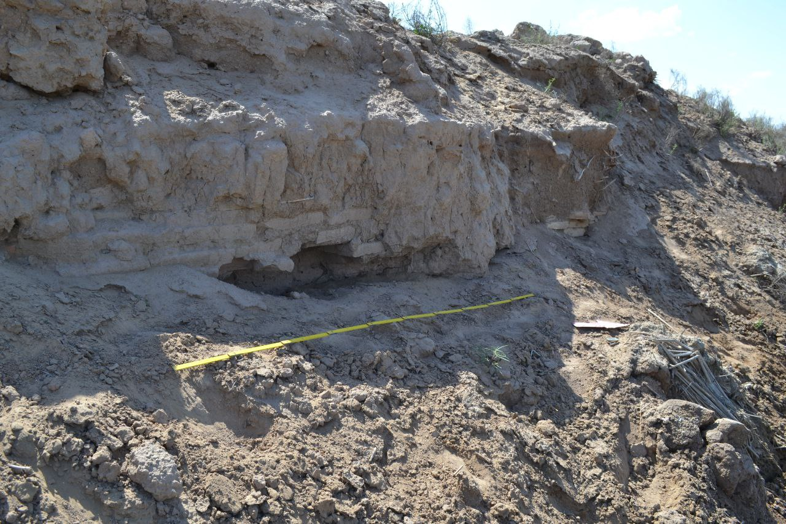
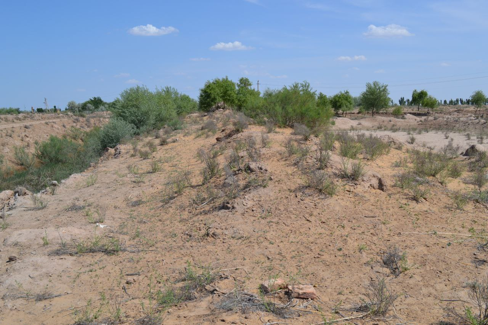

"ASHIRMAT TEPA"
1. Me’moriy inshootning nomi:
"ASHIRMAT TEPA"
2. Me’moriy inshoot tiklangan yil:
ХИИ-ХИИИ asrlar
3. Me’moriy inshoot joylashgan manzil:
Qo‘shko‘pir tumanining O‘rtayop qishlog‘idan 3, 5 km. janubiy-g‘arbda joylashgan.
4. Me’moriy inshootning qurilish materiallari:
Xom g‘isht, paxsa - guvala, qum, yog‘och
5. Inshootning bosh fasadi h.k.lar:


6. Me’moriy inshootning o‘lchamlari
Tepalik markazida aylana shakldagi diametri 1000 m ga yaqin va chuqurligi taxminan 70-80 m dan iborat krater mavjud.
7. Me’moriy inshoot to‘g‘risida tarixiy ma’lumot:
Ashirmattepa Qo‘shko‘pir tumanining O‘rtayop qishlog‘idan 3, 5 km. janubiy-g‘arbda, Qoraqum cho‘liga tutash hududida joylashgan. Xorazm Ma’mun akademiyasining Bahrom Sa’dullayev, Masharib Abdullayev, Shixnazar Rahimovlardan iborat arxeologik guruh Ashirmattepada arxeologik tadqiqot ishlarini olib borishdi. Tadqiqot ishlariga ko‘ra, qazilgan kollektorlarda yoqilgan g‘isht, shuningdek inson suyaklari topilgan. Ashirmattepadan topilgan dafn inshoaatlari 12-13asrlarga to‘g‘ri keladi. Shuningdek ushbu yodgorlikdan keramik idishlar parchalarini ko‘rsatuvchi materiallar ham topilgan. Arxeologlarning mulohazalariga ko‘ra, ushbu yodgorlikning yonida aholi punkti ham bo‘lgan. Ushbu hudud mo‘g‘ullar istilosi tufayli buzilib ketgan bo‘lib, yodgorlikdagi maqbara hanuzgacha o‘rganilmagan. Umuman olganda Ashirmattepa tarixini o‘rganish uchun to‘liq arxeologik tadqiqot o‘tkazish arxeologlar zimmasidagi mas’uliyatli vazifa sifatida turibdi.
8. Me’moriy inshootning texnik holati:
Yer ustki qism 100% devor konstruksiyalari ekologik va texnogen ta’sirlar natijasida yo‘qolib ketgan
BOSH SAHIFAGA QAYTISH